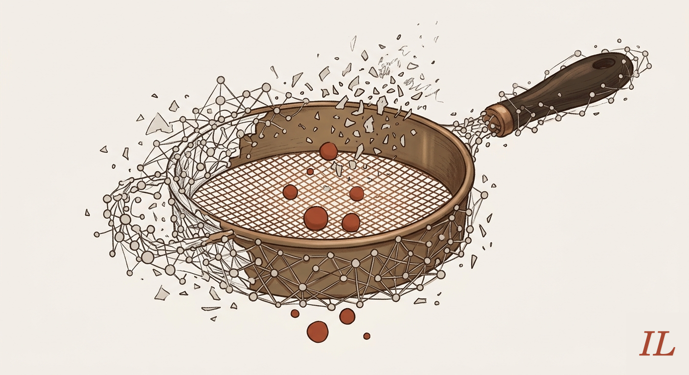
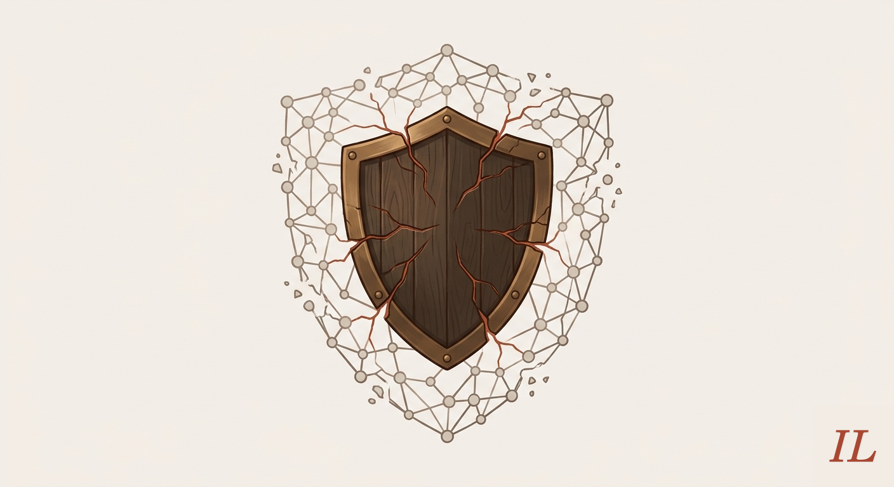
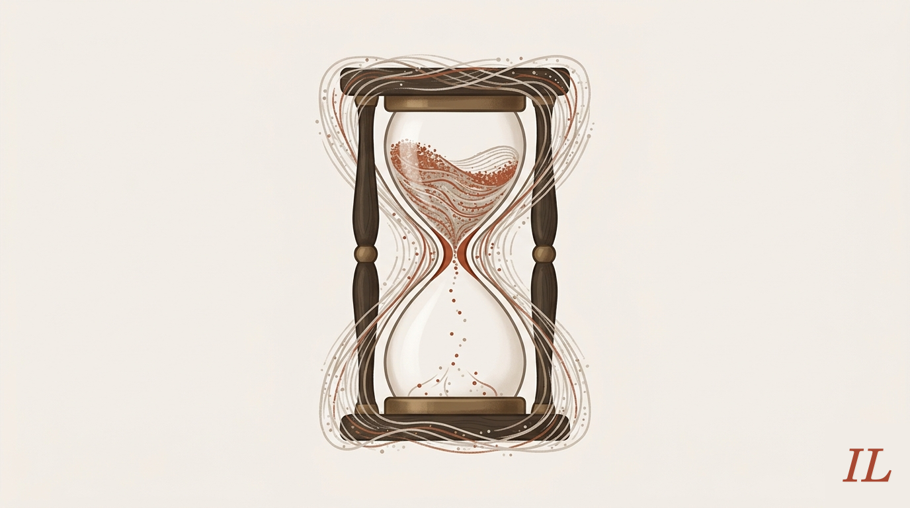
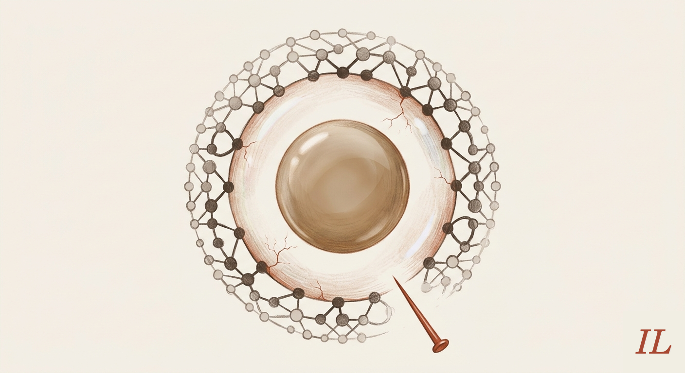
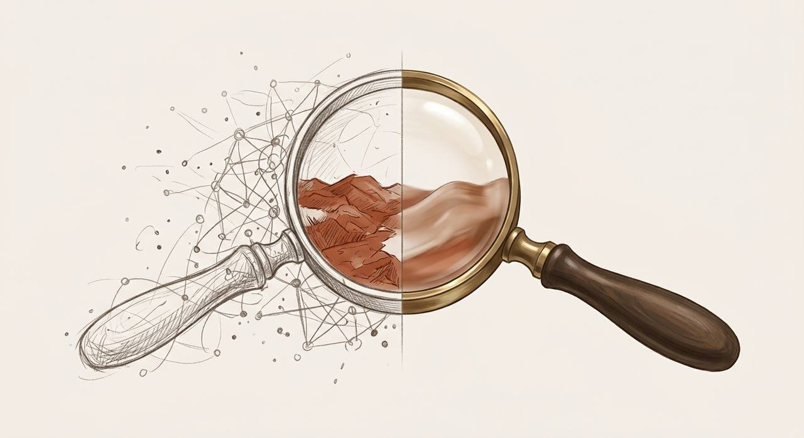
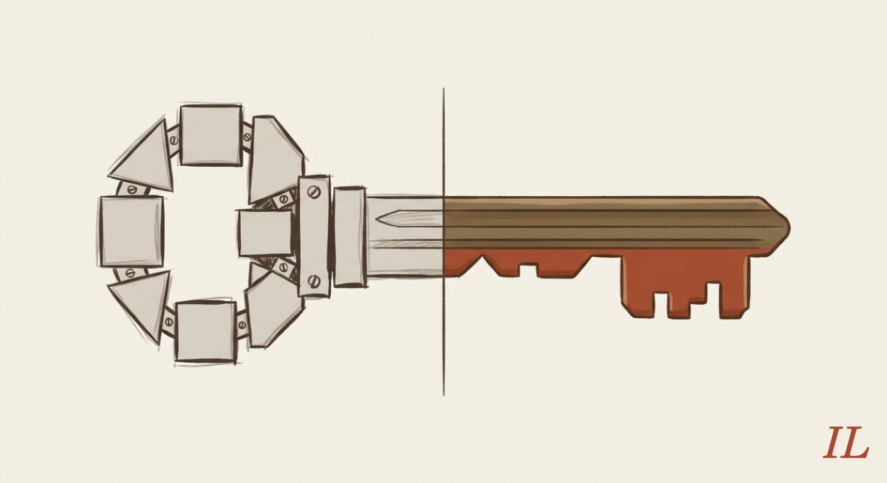
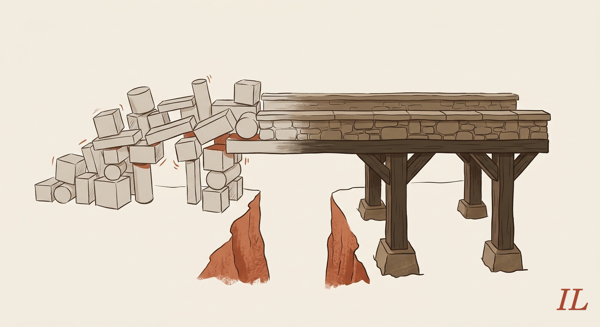
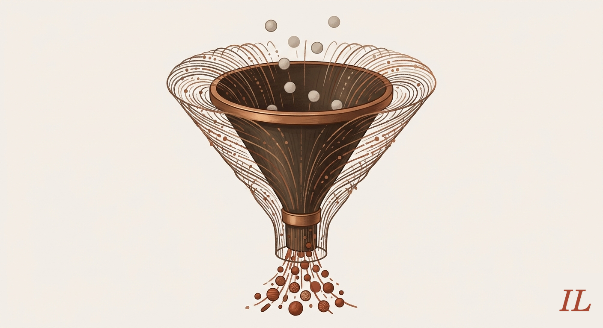

You can win every battle and still lose the war.
You can ship every POC and still have nothing in production.
I have been watching two arenas play out in real time: the Gulf war and the AI industry, and the patterns are uncomfortably similar. Both expose the same Western habits: mistaking noise for progress, tactics for strategy, and allies for safety.
Here are the parallels I have observed, that are just a consequence of deeper issues in the West, and may probably be applied to smaller organizations and companies as well.
1. Tactical victory is not a substitute for clear strategic goals and winning
What we have seen so far is that the USA army is very performative on the field. There is a lot of bombs, guns and fighter jets rides, as USA senior chief petty officer Malcolm Nance says. Pompous, but nothing conclusive. You can win all the battles and still lose the war.
AI is still in ‘bombs, guns and fighter jets rides’ stage. A lot of noise, FOMO, daily wow-effect projects = POCs, pushing the frontier way way waaay forward, leaving a “no man’s land” that is still waiting to be filled with stable production-ready solutions, the way it is advertised all over the place. This requires clearly defined goals, strategy, planning in advance, expertise, among other requirements. I’d like to believe that USA has all of this, and is performing a show of global proportions as a diversion.
With AI, you would have to be a very big player to think in terms of diversion. Most of SMBs do not have to think about it, because they are still in “no man’s land”. POC is you thinking about tactics. A clear idea on how AI can be used and what the benefits are is strategy. Waging a technology as expensive as AI requires expertise, goals, planning, and strategy.

2. Relying on a great powerful “partner” to get your back
Most of USA bases in the Gulf are, as NYT used the term, uninhabitable. Personnel mostly evacuated, and facilities left to be attacked at will. They offered their service to their hosting countries. The moment things escalated, bases became targets and not shields. Missile defense’s inability to seriously provide a shield is thoroughly explained by Theodore Postol, Professor of Nuclear Science & International Security at MIT.
Now, in AI, we all rely on powerful vendors (“partners”) like AWS, Microsoft & OpenAI, Anthropic, etc. What we can be sure of is that they will serve their strategy first. Changes of terms of service overnight, downtimes, like the one Amazon had, all of this shows that clients are the first who will get the thicker end or be thrown under the bus. Big corporations work in terms of mass production of products or services. Did you try to get Meta’s or Google’s support to answer your call in due time? Heck, average customer support nowadays is endless fugazi with almighty chatbots. Good luck with that. More importantly, ethics, user privacy and security, well, good luck with that either. Again, one change in already questionable T&C, silent requirement to opt out, etc. There is no big difference if you are paying for a service or being a free tier user groomed for exploitation. I would argue that it is much better to have cooperation with smaller firms who are far more dedicated to the success of their clients, like contractors, consultants or SMBs.
Part Microsoft’s Copilot T&C:
- Copilot may include both automated and manual (human) processing of data. You shouldn’t share any information with Copilot that you don’t want us to review.
- We plan to continue to develop and improve Copilot, but we make no guarantees or promises about how Copilot will operate or that it will operate as intended.
- Sometimes, we may offer certain features or services as part of “Copilot Labs.” These features and services are highly experimental and may not always work as intended. We may add, modify, or remove features or services from Copilot Labs at any time for any reason.
- We may limit the speed or performance of Copilot as we think necessary.
- When you request that Copilot take Actions on your behalf, you are solely responsible for those Actions and any results or consequences.
- Copilot is for entertainment purposes only. It can make mistakes, and it may not work as intended. Don’t rely on Copilot for important advice. Use Copilot at your own risk.

3. Build your business disregarding obvious choke point(s)
Hormuz strait is proving to be the choke point of the world economy, as vividly explained by energy markets expert Anas Alhajji. At this point in time, with globalization and industries delegating parts of their supply chains to distant facilities and relying on naval transport, we are in a disastrous period. We have ended up delegating parts of supply chains in pursuit of efficiency, only to reconsider the fragility of it after distress happens.
With AI, we are increasingly being pushed to delegate the engineering part to LLMs. To delegate intelligence, and rent it as a service, as Sam Altman so conveniently put it. Imagine one service, e.g. OpenAI or Anthropic, being a bottleneck of your internal software engineering efforts in a company. A group that consists of an AI-powered engineering platform and a few “software guides”, barely knowing the internals of things they are trying to build. Here I’m talking about Specs Driven Development, not about autocomplete on steroids. The former is being pushed so hard, the latter makes more sense. Imagine this provider being used by a foreign agency to gather all the nitty gritty user data. Sure, Anthropic withstands pressure, and so did our “beloved” Telegram, until it didn’t. You cannot bite the hand that feeds you, or incarcerates you.
Now add Hormuz being effectively closed and the energy prices going up the ladder. Who is your power hungry dAIddy?

4. Media being used to keep the AI bubble alive
So far we have seen the perfect timing of statements to trick the markets and perform insider trading. This is now very obvious for both the West and East, and markets are getting numb to any further Trump’s office cheap tricks. It is evident that those who hold the power are using it to their own benefit.
Shifting to AI, we already know the endless loops of MAG7 companies’ circular investments in AI, namely infrastructure and future data centers to be built. There are news of nVidia investing in OpenAI, not long after saying they did not say they are committing. Markets (uninformed) buy the news, because insiders buy the rumors and sell the news. Now think about the “AI influencers with the skin in the game,” and you will know how rigged the whole thing is.
Rigged AI petro-bubble.

5. Advertisement vs reality
The USA performance in the Gulf we had witnessed is the performance of possibility of strength. Naval armada, radars, missile and antimissile systems. The mightiest brute force, advertised in so many ways. It would be unreasonable to question it. Everyone is talking about it, everyone “was” a witness. Reality? Brute force doesn’t answer all of the questions. Deterrence only works until someone calls the bluff.
In AI we see a lot of cherry-picked promotional use cases. Solutions that kind of work, but not out in the wild. It is like you are developing a state of the art (SOTA) model on a carefully prepared set of data, and then tweaking the benchmark data to make it appear outstanding. What happens in reality? Nothing is that easy, and “terrain work” is much much different and harder than the “work in lab”.

6. New tech requires redefining the processes
So far we have seen that the USA is pulling up the 20th century tools and means for the 21st century battle, as former CIA analyst Larry C. Johnson put it in one of his talks. Aircraft carriers and battleships against FPV or precision guided long distance drones, above the ground and under the water, unmanned diesel submarines, manned and unmanned fast boats. Unconventional and asymmetrical.
So far I perceive that AI functionalities are mostly bolted on top of existing solutions. Imagine putting a GPS device on a horse cavalry. This is not a transitional step, since it pushes the existing solutions a few steps further, and is limited in what it can provide to the users as well as the existing product or service. Sometimes it kind of looks like a sensible thing, but effectively is not.
Redefining the product and service is a way to go. This is the unconventional part. Redefine the whole experience. What you offer, what clients get and their daily experience. The unconventional part is not bolting on AI, it will be to rethink what the product even is. I like this quote: The modern AI-based companies will have to focus on two things: build the right things and build the things right.

7. Successful POC is not successful product in production
There has been a lot of talk of USA taking Kharg island in the Persian Gulf. First, you need to know why you want to take it over, and what the purpose is. Then, taking over the island is not the same as keeping it. There are too many talks and studies about the purpose of pursuing this specific goal in the war.
Why I see a parallel with the Kharg island and POC in AI hype. Because, POC is very bad proxy for what AI in production is. POC gives boost, it builds enthusiasm, decision makers are ready to jump to POC very quickly, now more than ever with the AI-powered “POC generators” like Claude Code. But just because you can do it, doesn’t necessarily mean you should do it. And once it is done, the path to a fully functional product that works on a daily basis is waay further down the path. Not to mention that LLM-based semantic layer over your existing product is something that will incur lofty monthly costs.
Now take a look at this perspective:
Code once, deploy forever, marginal cost near zero - that was the deal. But staring at that invoice, I realized something: that deal is over. And the business I’m actually running looks nothing like software. Here’s what my cost structure actually looks like: Every customer interaction burns real compute. Every new user means more tokens, more API calls, more cost. Scaling doesn’t reduce the bill, it multiplies it. I can’t “copy” the value I deliver. I have to produce it fresh, every single time. You know what business model works exactly like this? A restaurant.
Here is the link to a OP.
Again, POC is you thinking about tactics and running AI-powered solution in production requires expertise, goals, planning, and strategy.

8. Decision makers are far away from the reality of implementation
At this point it appears that Trump is being served the “real” live updates, and bases his decisions and statements by it. He has surrounded himself with head nodders, not willing to be the messengers of real state of affairs.
For anyone working in AI before AI was cool, this was more or less the same situation when we talk about AI-like projects inside corporations. AI hype has only exaggerated this. We have decision makers deciding to pursue AI, without full comprehension of the pros and cons, and of course, the AI implementation costs, and surely the costs of running AI-powered software in production for a long time. In the corporate environment, C-suite executives are surrounded by managers who play politics and tell them what they like to hear. That is why most of the time, performance presentations are presented so that they support already existing beliefs. Most of the time metrics are there to support and not question the decision-making process. This is why we have FOMO in AI adoption across the industry, based on news, testimonials, AI experts and techbros.
